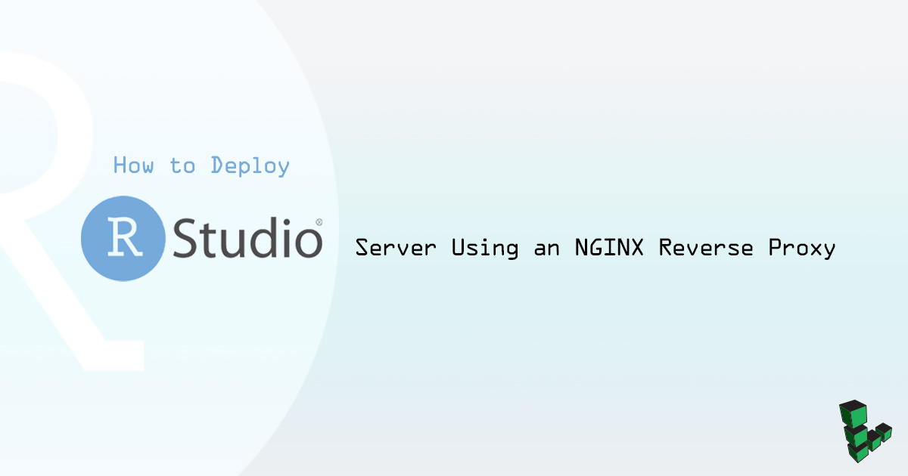
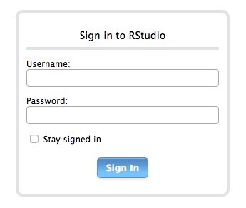
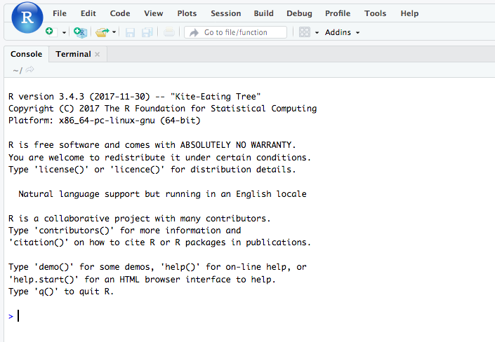

How to Deploy RStudio Server Using an NGINX Reverse Proxy
Updated by Linode Written by Sam Foo

What is RStudio Server?
RStudio is an integrated development environment (IDE) for R, an open source statistical computing language. It includes debugging and plotting tools that make it easy to write, debug, and run R scripts. The IDE is available in both desktop and server configurations. By hosting the server configuration (RStudio Server) on a Linode, you can access the IDE from any computer with internet access. Since data analysis often uses large datasets and can be computationally expensive, keeping your data and running R scripts from a remote server can be more efficient than working from your personal computer. In addition, a professional edition is available that allows project sharing and simultaneous code editing for multiple users.
Before You Begin
This guide assumes an R installation version of R 3.0.1+ and will show how to install RStudio Server 1.1. See our guide on installing R on Ubuntu and Debian for steps on installing the latest version of R.
The steps in this guide are for Ubuntu 16.04 and should be adapted to your specific distribution installation.
Install RStudio Server
Download RStudio 1.1:
wget https://download2.rstudio.org/rstudio-server-1.1.414-amd64.debInstall and use the gDebi package installer for the downloaded Debian package file:
sudo apt install gdebi sudo gdebi rstudio-server-1.1.414-amd64.debIf successful, the output should show
rstudio-server.serviceas active.Created symlink from /etc/systemd/system/multi-user.target.wants/rstudio-server.service to /etc/systemd/system/rstudio-server.service. ● rstudio-server.service - RStudio Server Loaded: loaded (/etc/systemd/system/rstudio-server.service; enabled; vendor preset: enabled) Active: active (running) since Tue 2018-01-23 21:18:44 UTC; 1s ago Process: 13676 ExecStart=/usr/lib/rstudio-server/bin/rserver (code=exited, status=0/SUCCESS) Main PID: 13677 (rserver) CGroup: /system.slice/rstudio-server.service └─13677 /usr/lib/rstudio-server/bin/rserver Jan 23 21:18:44 localhost systemd[1]: Starting RStudio Server... Jan 23 21:18:44 localhost systemd[1]: Started RStudio Server.In a browser, navigate to your Linode’s public IP address on port 8787 (i.e.
public-ip:8787). Use your Unix user’s username and password to log in when prompted:
Because you will be accessing RStudio through a reverse proxy, set RStudio Server to listen on localhost instead of a public IP. Open
rserver.confin a text editor and add the following content:- /etc/rstudio/rserver.conf
-
1 2# Server Configuration File www-address=127.0.0.1
You can also set the configuration for each individual session. For example, the default session timeout is two hours. Change this to 30 minutes to conserve server resources:
- /etc/rstudio/rsession.conf
-
1 2# R Session Configuration File session-timeout-minutes=30
Check your configuration:
sudo rstudio-server verify-installationIf there are no issues, restart RStudio server to apply the changes:
sudo rstudio-server restart
Set Up the Reverse Proxy
Running Rstudio server behind a reverse proxy offers benefits such as being able to pick the URL endpoints and load balancing.
Install NGINX:
sudo apt install nginxOpen
nginx.confin a text editor and add the following configuration:- /etc/nginx/nginx.conf
-
1 2 3 4 5 6 7 8 9http { # Basic Settings # ... map $http_upgrade $connection_upgrade { default upgrade; '' close; } }
Create an NGINX configuration in
/etc/nginx/conf.d/calledrstudio.confwith the following configuration. Replaceexample.comwith the public IP address or FDQN of your Linode:- /etc/nginx/conf.d/rstudio.conf
-
1 2 3 4 5 6 7 8 9 10 11 12 13 14 15server { listen 80; listen [::]:80; server_name example.com; location / { proxy_pass http://localhost:8787/; proxy_redirect http://localhost:8787/ $scheme://$host/; proxy_http_version 1.1; proxy_set_header Upgrade $http_upgrade; proxy_set_header Connection $connection_upgrade; proxy_read_timeout 20d; } }
Check the NGINX configuration:
sudo nginx -tIf there are no errors, restart NGINX to apply the changes:
sudo systemctl restart nginxIn a browser, navigate to the public IP or FDQN of your Linode. After logging in, the RStudio IDE should be available from your browser:

NoteIf Rstudio does not load in the browser, you may need to clear your browser cache.
Join our Community
Find answers, ask questions, and help others.
This guide is published under a CC BY-ND 4.0 license.